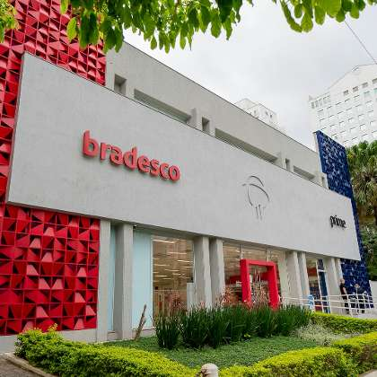

O Bradesco é um dos maiores grupos financeiros do Brasil, com sólida atuação voltada aos interesses de seus clientes desde 1943.
Além da excelência em serviços, destaca-se por ser um dos melhores gestores de recursos do mercado, com resultados construídos sobre bases sustentáveis.
O Bradesco é fundado por Amador Aguiar, com uma visão inovadora: ser um banco democrático, presente em todo o País, a serviço de seu desenvolvimento econômico e social. Para isso, atende aos imigrantes, lavradores e pequenos comerciantes, além do público tradicional das casas bancárias, formado por empresários e grandes proprietários de terras. Os gerentes ensinam os clientes a preencher cheques e o banco é o primeiro do País a receber o pagamento de contas de energia elétrica da empresa Light. Com o crescimento das operações, a Matriz é transferida para o centro da capital paulista.
Endereço: Cidade de Deus s/nº - Vila Yara - Osasco - SP -
